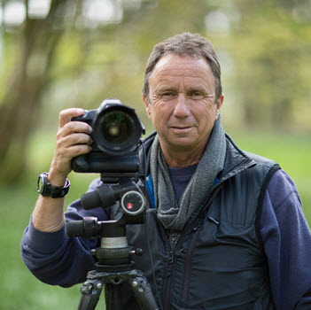

John Doe was born 1972 in Shiga, Japan. He lives and works in Tokyo. He graduated from Saint Paul’s University, Tokyo in 1993. A self-taught pioneer in the field of landscape photography, he has become synonymous with pristine images of cascading waterfalls, ethereal mountain peaks and peaceful desert canyons.